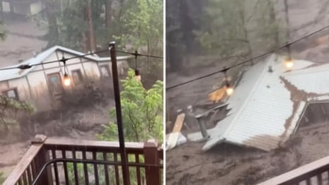

Three people have died in a mountain town in southern New Mexico that is a popular summer retreat after monsoon rains triggered flash flooding that was so intense an entire house was swept downstream, officials said.
A man and two children were swept away Tuesday by flood waters, the village of Ruidoso said in a statement.
Three people earlier had been reported missing, but it wasn’t immediately clear early on Wednesday whether those were the same three who died.
Emergency crews carried out at least 85 swift-water rescues in the Ruidoso area, including of people who were trapped in their homes and cars, said Danielle Silva of the New Mexico’s department of homeland security and emergency management.
The water had receded by Tuesday night and search-and-rescue and swift-water rescue teams were scouring the town for the missing people, while public works crews cleared debris from the roadways. Some cars were left stranded in the mud.
Two national guard rescue teams and several local teams already were in the area when the flooding began, Silva said, and more national guard teams were expected.
The floods came just days after flash floods in Texas killed more than 100 people and left more than 160 people missing.
Moment house is swept away in New Mexico flash flooding – video
In New Mexico, officials urged residents to seek higher ground on Tuesday afternoon as the waters of the Rio Ruidoso rose nearly 19ft (2.7 meters) in a matter of minutes amid heavy rainfall. The National Weather Service issued flood warnings in the area, which was stripped of vegetation by recent wildfires.
A weather service flood gauge and companion video camera showed churning waters of the Rio Ruidoso surging over the river’s banks into surrounding forest. Streets and bridges were closed in response.
Kaitlyn Carpenter, an artist in Ruidoso, was riding her motorcycle through town on Tuesday afternoon when the storm started to pick up, and she sought shelter at the riverside Downshift Brewing Company with about 50 other people. She started to film debris rushing down the Rio Ruidoso when she spotted a house float by with a familiar turquoise door. It belonged to the family of one of her best friends.
Her friend’s family was not in the house and was safe, she said.
“I’ve been in that house and have memories in that house, so seeing it come down the river was just pretty heartbreaking,” Carpenter said. “I just couldn’t believe it.”
During a radio address on Tuesday night, Ruidoso’s mayor, Lynn D Crawford, encouraged residents to call an emergency line if their loved ones or neighbors were missing. He also said there were reports of dead horses near the town’s horse racing track
“We knew that we were going to have floods … and this one hit us harder than what we were expecting,” Crawford said.
The area has been especially vulnerable to flooding since the summer of 2024, when the South Fork and Salt fires raced across tinder-dry forest and destroyed an estimated 1,400 homes and structures. Residents were forced to flee a wall of flames, only to grapple with intense flooding later that summer.
“We know that the water levels seemed to be higher than they were last summer,” Silva said. “It is a significant amount of water flowing throughout, some of it in new areas that didn’t flood last year.”
Matt DeMaria, a meteorologist with the National Weather Service in Albuquerque, said storms formed in the early afternoon over terrain that was scorched last year by wildfire. The burn scar was unable to absorb much of the rain, as water quickly ran downhill into the river.
Preliminary measurements show the Rio Ruidoso crested at more than 20ft (6 meters) – a record high if confirmed – and was receding by Tuesday evening.
Three shelters opened in the Ruidoso area for people who could not return home.
Cory State, who works at the Downshift Brewing Company, welcomed in dozens of residents as the river surged and hail pelted the windows. The house floating by was “just one of the many devastating things about today”, he said.
The sight brought back painful memories for Carpenter, whose art studio was swept away during a flood last year. Outside, the air smelled of gasoline, and loud crashes could be heard as the river knocked down trees in its path.
“It’s pretty terrifying,” she said.